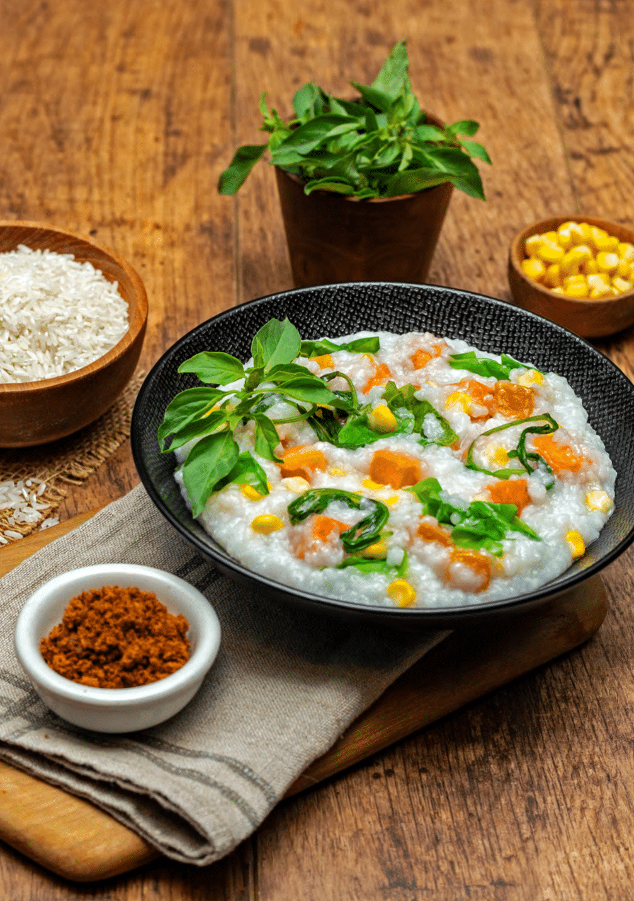
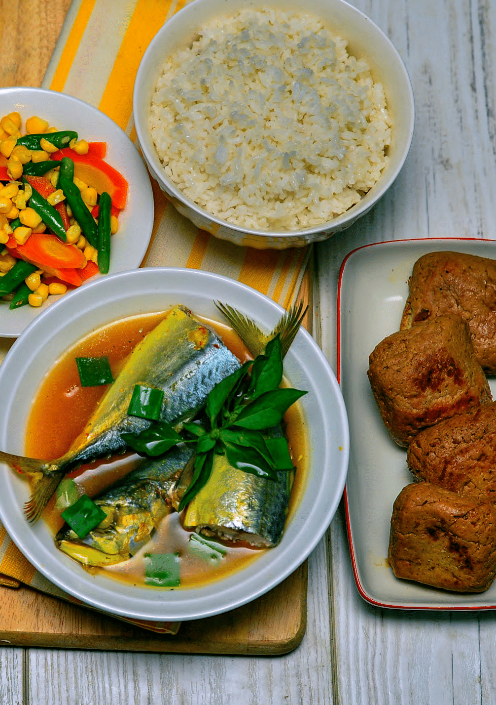
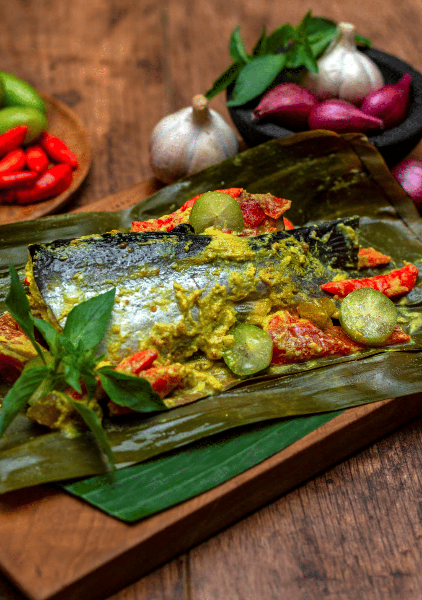

Daun pisang secukupnya (jika ingin dibakar, bukan dioven)
Bumbu halus:
6 siung bawang merah
3 siung bawang putih
2 cabai merah besar (keriting jika suka pedas)
2 cabai rawit
1 ruas kencur
Sedikit terasi sangrai
6 butir kemiri
1 tomat merah
Cara membuat
Lumuri ayam dengan air jeruk nipis, tunggu 30 menit. Bilas.
Bumbu dihaluskan, tumis dengan sedikit minyak atau sangrai dengan api kecil.
Masukkan serai, lengkuas, daun jeruk dan santan. Beri garam dan lada secukupnya. Masak hingga bumbunya agak kering.
Panggang dalam oven, atau bakar dengan dibungkus daun pisang sampai harum.
Bubur Manado

Bahan
1 mangkuk nasi (lebih cepat membuatnya daripada dimulai dengan beras)
1 jagung manis, disisir/dipipil
1 ubi merah, kupas, potong kotak
¼ labu kuning/waluh yang tidak terlalu besar, potong kecil
1 batang serai geprek
1 ikat kangkung (atau daun gedi), petik pilih yang muda
1 ikat bayam merah, petik pilih yg muda
1 ikat kemangi
Bumbu halus:
2 siung bawang putih
2 siung bawang merah
2 buah kemiri
Garam, lada secukupnya
Cara membuat
Bumbu halus diulek hingga benar-benar halus
Buat bubur dari nasi : tuang air mendidih ke dalam panci berisi nasi hingga batas air 1 ruas jari di atas nasi. Terus diaduk sambil dimasak, jangan sampai gosong. Biar air mulai susut dan bubur belum terbentuk, tambahkan lagi airnya.
Masukkan bumbu halus, jagung manis, ubi merah, labu kuning, dan serai.
Jika akan disajikan, angkat serainya, buang. Masukkan kangkung dan bayam merah sebentar.
Sajikan bubur dalam mangkuk, beri kemangi dan taburi dengan 1-2 sendok makan abon ikan.
Ikan Kembung Kuah Asam

Bahan
3 ekor ikan kembung banjar
2 buah jeruk nipis, peras airnya
2 lembar daun salam
1 jempol lengukas, geprek
4 daun jeruk purut
8-10 belimbing wuluh, potong2
5 cabe rawit merah utuh
2-3 tangkai kemangi
1 batang daun bawang, rajang kasar
1 liter air
Bumbu ulek kasar:
6 siung bawang merah
3 siung bawang putih
1 cabe merah besar (keriting jika suka pedas)
1 ruas kunyit, bakar
1 ruas jahe
Cara membuat
Lumuri ikan kembung dengan air jeruk nipis, terutama bagian isi perutnya. Diamkan 15-30 menit.
Tumis bumbu ulek kasar dengan sedikit minyak, masukkan salam, lengkuas, serai dan daun jeruk. Tuang air, masak hingga mendidih
Masukkan ikan kembung, belimbing wuluh, cabai rawit, beri garam dan lada secukupnya.
Masak hingga matang, sebelum diangkat beri kemangi dan daun bawang iris.
Pepes Ikan Patin/Dori

Bahan
1 ekor ikan patin ukuran sedang potong jadi 2, atau ikan Dori 200 gr, ambil dagingnya saja bagi jadi 2
8-10 belimbing wuluh
4 daun salam
2 jempol lengkuas digeprek
10 cabai rawit utuh
2 tomat besar iris agak besar
2 batang serai, geprek
100 ml santan
2 lembar daun pisang agak lebar untuk bungkus
Bumbu halus:
6 siung bawang merah
3 siung bawang putih
1 ruas kunyit kupas, bakar
1 ruas jahe
6 butir kemiri
1 sendok teh ketumbar
Garam, lada secukupnya
Cara membuat
Bumbu halus ulek, sangrai dengan api kecil sampai harum. Boleh ditumis dengan sedikit sekali minyak jika perlu.
Aduk ikan, dan semua bahan-bahan termasuk santan dan bumbu halus.
Ambil selembar daun pisang, 1 potongan ikan dibungkus dengan isian 1 batang serai, 1 lengkuas, 2 daun salam, dan adukan bumbu. Semat dengan lidi, kukus hingga matang. Sebelum makan pepes dipanggang/dibakar sebentar hingga harum.